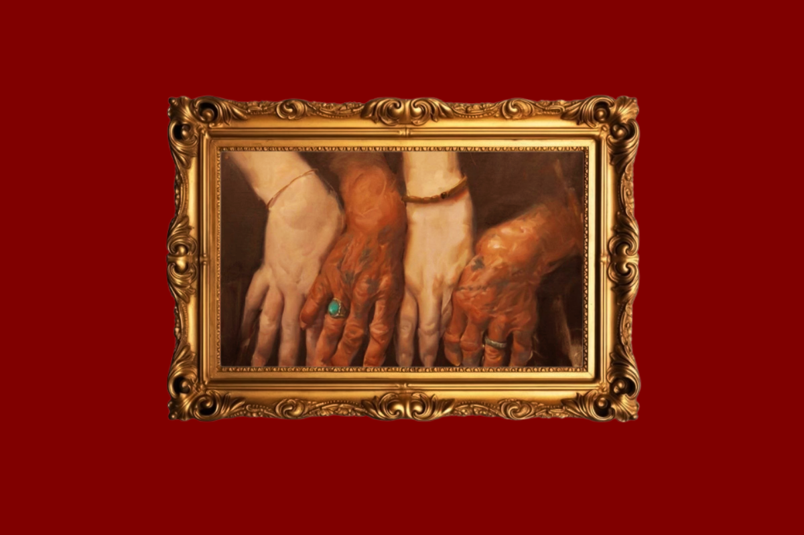

كيف يمكن للأيادي أن تأخذنا في رحلة إنسانية؟ يحول الأستاذ والفنان التشكيلي أسامة حمدي اليد إلى سيرة تستحق السرد، مكتوبة بالألوان، أيادٍ متنوعة تزين جدران المعرض متجعدة، متعبة، قاسية، ناعمة، يقدم إجابة عن هذه التساؤلات في مجموعته الأخيرة "أخاديد"، التي تبين لنا كم من القصص يمكن أن تحمل يدٌ واحدة، كل أثر، وخدش، وتجعيدة تحمل قصة مستقلة، وكل صلابة ونعومة هي رحلة في الذاكرة الإنسانية. نحن نكرم هذا الجزء من أجسامنا كل يوم، نزينه بالعديد من المجوهرات باختلاف معانيها وقيمها المعنوية، من الخواتم إلى حلقات الزواج التي كانت، ولا تزال، رمزًا للوفاء والإخلاص. نتحدث ونتفاعل ونتواصل بالأيادي، هذه ليست مجرد أعضاء، وإنما بوابات للعقل البشري، إذ إن الفنانين يعبرون عن موهبتهم من خلال أناملهم، وينقذ الأطباء ملايين الحيوات بأياديهم الثابتة. يفسر الفنان أسامة حمدي، في أكثر من لوحة، الرحلة البشرية، يأخذنا معه إلى أزمان متعددة وحكايات مختلفة تتمثل بأنعم الأيادي وأخشنها، باختلاف لونها وحجمها، لكل منها قدر واستخدام يختلف عن الآخر، رغم اختلاف الأعمار التي تمثلها الأيادي، إلا أن جميعها تشترك في حمل أثر الزمن، كأن الفنان أراد أن يجعل التجاعيد لغة بصرية. وهذا ليس بجديد للفنان، فهو يرى في الشخصيات العامة دورًا بطوليًا وقصصًا تستحق الذكر، ويجد الجمال الحقيقي في الحياة اليومية البسيطة. ووصفته الناقدة أميرة ناجي، في قراءة نقدية خصت بها "المراقب العراقي"، أن: "لوحاته تتسم بتكوينات متماسكة ترتكز على كتلة مركزية تمنح المشهد ثباتًا، بينما تعمل الخلفيات اللونية على خلق فضاء مفتوح يعزز العلاقة بين الشكل والمحيط، الملمس الخشن للسطح اللوني يُكسب اللوحة طابعًا حسيًا قويًا، كأن المادة التشكيلية نفسها تشارك في سرد القصة". من خلال ملاحظتنا للوحات الأستاذ أسامة حمدي، أخذت اليد حيزًا واسعًا من مساحة اللوحة، بينما استخدم في الخلفية ألوانًا هادئة، مما يجعل عين المشاهد تنشغل بتفاصيل الأصابع والخطوط والآثار، إضافة إلى الحلي التي أضافها الفنان بعناية واختيار دقيق. كاليري الفنان حامد سعيد عُرضت هذه المجموعة في غاليري الأستاذ والفنان حامد سعيد، في أحد أزقة منطقة العباسية في البصرة، يعد الغاليري مكانًا يشغل حيزًا ثقافيًا وفنيًا أعمق وأوسع من حيزه المكاني، فعلى الرغم من وطأة الأسماء وتنوعها في عالم الفنانين البصريين، إلا أن شحة الموارد والاهتمام المجتمعي في العقد السابق جعلت مثل هذه المحافل نادرة ومميزة. وعندما تحدث لنا الأستاذ حامد عن فكرة قاعته، التي على الرغم من صغر حجمها، إلا أنها تستقبل سنتها الخامسة محافظةً على ازدهارها وفعالياتها، من استضافة المعارض التشكيلية للعديد من الفنانين من عموم العراق، إضافة إلى جلسات أدبية ودروس رسم احترافية، حيث أضاف: "أن 90% من زوار الغاليري هم من عامة الناس غير الفنانين، حيث أشعر بأننا نغير واقعًا ثقافيًا ونؤثر على أجيال، ونحميهم من التشوهات البصرية." وتحدث لنا الأستاذ حامد عن رؤيته الشخصية لهذه اللوحات وصداقته مع الفنان أسامة، حيث قال: "هو أنيسي وأنا أنيسه، تشاركنا النشأة والفن، فقد تربينا على رائحة زيت الرسم." حيث نشأ الاول في قضاء أبي الخصيب في جنوب البصرة، التي درس فيها، ثم حصل على شهادة الماجستير من جامعة الإسكندرية في مصر، والآن يمارس عمله كتدريسي وفنان تشكيلي. وعند سؤاله عن فنه شخصيًا قال: "أنا أتحدث عندما أرسم." وتبرز لنا هذه الروحية عندما ننظر إلى لوحاته المعروضة في البصرة وبغداد والسليمانية والعديد من الدول، مثل تركيا وهولندا والأردن.
